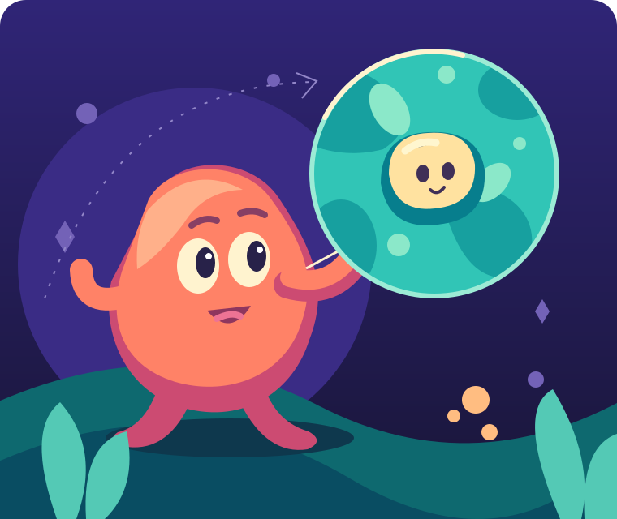

01 / CHARACTER
A face with a purpose.
Look. Prepare. Act. React. Clear silhouettes, readable eyes and delayed gestures turn a mechanism into a performance.
VIVID SCIENCE / A VISUAL LANGUAGE
Make the invisible feel alive. Bold colour, curious characters and changes of scale turn complex science into a story you can follow.

Colour has a job to do.
01 / THE SCREENING ROOM
ENGLISH VOICE · ORIGINAL MUSIC & SOUND · OPTIONAL ENGLISH SUBTITLES
02 / THE VISUAL LANGUAGE
Every shape, expression and camera move helps the viewer understand what happens next.
01 / CHARACTER
Look. Prepare. Act. React. Clear silhouettes, readable eyes and delayed gestures turn a mechanism into a performance.
02 / COLOUR
Deep indigo holds the world. Teal sets the field. Coral pulls attention. Broad highlights explain the shape.
03 / SCALE
Carry a familiar object into the next view. Let a close-up reveal a cause, and a pullback reveal its consequence.
03 / TRY THE CHANGE OF SCALE
A scale change works when the viewer keeps their bearings. Follow the cream-coloured subject from its surroundings into a close view.
INTERACTIVE STYLE STUDY · NO AUDIO
04 / YOUR NEXT FILM
Hidden processes. Tiny systems. Big connections. Give the story something to show, and the characters something to do.
Describe the audience, the question and the change you want them to understand.
Write original scenes and narration. Let factual sources guide the visual metaphors.
Check the whole film, including transitions, speech clarity and the timing of every interaction.
A BRIEF FOR YOUR AGENT
Open Codex Film Studio in your Agent and ask it to create a Vivid Science film about your topic in an independent project.
Includes a style guide, drawing primitives, empty inputs and frame-analysis tools. New story scenes and sound are authored for each film.
05 / PRODUCTION NOTES
Narration sets the pace. Gaze, contact, camera and sound land on the same named events.
Build a musical motif, changing instrumentation, an environment bed and precise action cues. Leave room for the voice.
Inspect consecutive frames and full motion. Frame diagnostics, visual review and listening answer different questions.
06 / ROOTS & REFERENCES
Original vector worlds informed by the craft of science animation. Each film keeps its own research, characters and creative decisions.